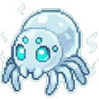

 Ghost
Ghost Electric
ElectricTap a stage to read its story.
Cellara is a translucent pale-blue ghostly spider with a round glowing spherical body and six visible legs. Wispy blue flame-tendrils drift off its sides like phantom silk. Its round eyes glow a soft white-blue that casts dim light in Ghost Hollow's eternal murk. It drifts more than walks, hovering just above the hollow floor on barely-visible legs, trailing tiny ghost-light sparks. Children who spend time near Cellara report hearing fragments of words spoken long ago in Ghost Hollow - echoes the little spider has collected.
Field note: Cellara stores sound fragments in its web - touching one strand of its web plays back a whispered word from Ghost Hollow's past.
Ghost Hollow. Cellara and its family are found in the Ghost Hollow. See everyone who lives there.
Share a Bond Food that matches its types to become friends. Cellara loves:
A Bond Food is not a trick. It joins your spirit with the Kimuro's spirit, and only when it chooses you.
Print the Kimuro adventure packs: mazes, cards, a board game and Bond Mark medals.
See the printable packs